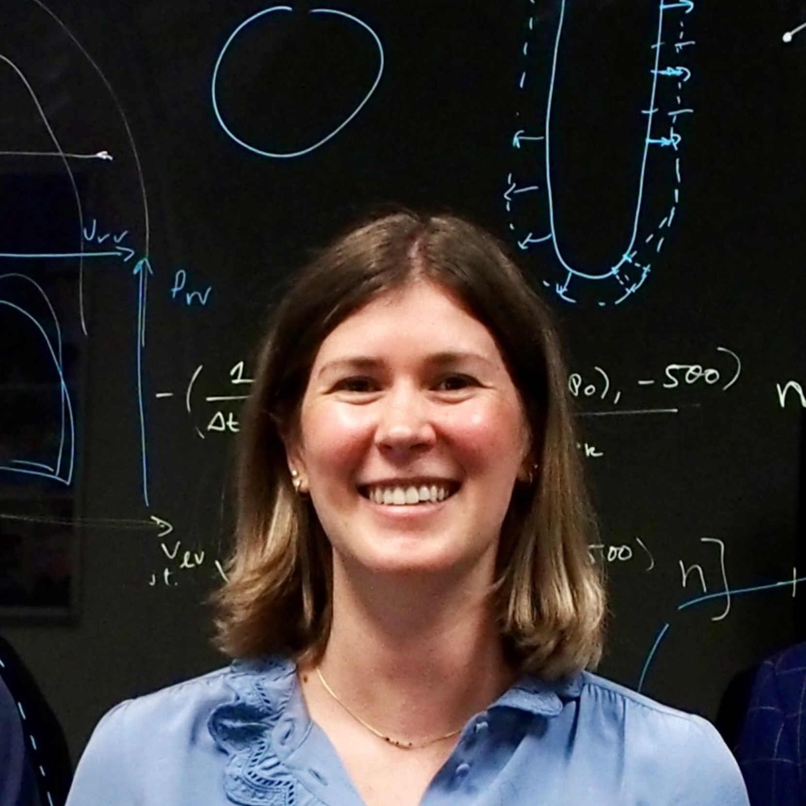

Biomedical Engineer, Research Fellow | Patient-Specific CFD/FSI Modeling

PhD biomedical engineer specializing in computational modeling of cardiovascular physiology and interventions. Experienced in developing patient-specific multi-scale CFD and fluid–structure interaction models integrating clinical imaging and hemodynamic data to evaluate valve disease, LVAD support, and aortic interventions. Proven ability to translate in-silico simulations into clinically relevant insights through collaboration with engineers, cardiac surgeons, and radiologists. Strong track record of building validated modeling pipelines to study device performance, procedural outcomes, and cardiovascular mechanics.
Biomechanics and Modeling in Mechanobiology, 2026
Complete mathematical formulation, coupling strategy, and parameterization required to build a reproducible pipeline from dynamic CT, 2D transthoracic echocardiography, and right heart catheterization. This methodology is demonstrated in a patient under long-term support of LVAD and concomitant mitral and aortic regurgitation. The personalized, fully coupled 3D–0D models reproduced available clinical targets with a mean error of 8.6%, enabling controlled in silico interrogation of valve repair strategies.
Frontiers in Cardiovascular Medicine, 2026
We developed patient-specific, image-based 3D–0D cardiovascular models to investigate the effects of mitral regurgitation severity on whole-system hemodynamics and right ventricular (RV) function. Progressive MR increased RV afterload and promoted RV dysfunction, even when intrinsic RV contractility was preserved. Furthermore, conventional MR severity measures and left-heart metrics did not reliably reflect the burden on the right heart, highlighting the importance of directly assessing RV structure and function when evaluating patients with MR.
Functional Imaging and Modeling of the Heart, LNCS, 2025
We developed a patient-specific computational framework that couples 3D simulations of the left heart and LVAD with a closed-loop 0D model of the entire cardiovascular system, with model parameters optimized using clinical data. The model showed strong agreement with patient-specific clinical measurements and successfully captured the complex hemodynamic interactions between the LVAD and cardiovascular system. The framework also enabled detailed assessment of regurgitant flow, ventricular pressure-volume dynamics, and systemic circulation, providing a powerful tool for studying patient-specific responses to LVAD therapy.
Journal of Cardiovascular and Translational Research, 2025
We used patient-specific computational fluid dynamics simulations of 15 SAVR cases, with and without Y-incision aortic annular enlargement (Y-AAE), including virtual valve-in-valve (ViV) procedures, to evaluate hemodynamics and blood residence time. Y-AAE substantially improved hemodynamics, reducing peak velocity by up to 55% and transvalvular pressure gradients by up to 92% in ViV scenarios. Y-AAE also reduced mean blood residence time without increasing maximum residence time, suggesting improved flow performance without evidence of increased thrombosis risk.
Computers in Biology and Medicine, 2026, In submission
Valve repair improved cardiac output, reduced pulmonary congestion, and enhanced right ventricular loading conditions across the cohort. Mitral valve repair restored aortic valve opening, leading to improved aortic root washout and reduced blood residence time, suggesting a potential reduction in thrombotic risk in LVAD-supported patients.
Medical Image Analysis, 2026, In submission
We developed an image-based fluid–structure interaction (FSI) framework for creating patient-specific digital twins of aortic dissection by integrating CT, 4D flow MRI, and catheterization data. The framework incorporates inverse mechanics, vascular deformation mapping, and a monolithic FSI formulation to model patient-specific blood flow and wall mechanics. The resulting digital twins accurately reproduced measured hemodynamics while enabling quantification of clinically inaccessible quantities such as wall stress, deformation, and transmural pressure gradients, including under altered physiological conditions such as exercise.
Computers in Biology and Medicine, 2025
We used computational modeling to evaluate how different cardiac tissue patch designs, including transmural and epicardial patches with varying active stress generation, fiber alignment, and material properties, affect heart function. Transmural patches provided the greatest functional benefit, with a patch generating only 10% of healthy active stress increasing stroke volume by 18%, while optimized fiber alignment and higher active stress restored more than 50% of lost stroke volume. Surface patches produced more modest improvements, particularly in hearts with fibrotic thinning.
Journal of Computational Physics, 2024
We developed a reduced-order fluid–reduced-solid interaction (FrSI) framework that combines an ALE fluid model with POD-based motion modes derived from imaging data to efficiently simulate cardiovascular fluid–structure interactions. The FrSI model accurately reproduced ventricular motion, with end-diastolic and end-systolic surface position errors below 1.5% and 3.5%, respectively, while substantially reducing computational complexity. The framework also successfully captured altered physiological states, including increased afterload and myocardial infarction, demonstrating its potential for efficient patient-specific cardiovascular simulations.